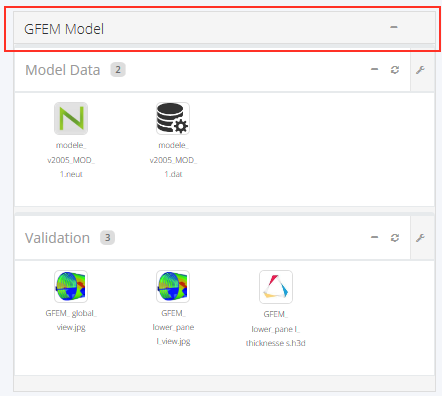

Getting Started
The global idea of the tool are to :
- Construct a personal View
- Add new or existing widgets on it
- Save the view to its profile
- Share components (view or widget) with other people, if needed
View
A view is like a Dashboard.
It's a page that the user car create/append a widgets, grouping them, according to his business needs.
Each view must associated with a defined study.

A study can be selected from the navbar dropdown on the top of the the page
If you change a study of an existing view, all data will be refreshed.
And you have to save the view to keep the changes.
How to create an empty view ?
- By using the top navbar menu view icon :
- By using the top navbar dropdown menu : VIEW : -> New View

- By using the left sidebar view icon : VIEWS/PERSONAL
How to re-use an existing View ?
- Select an existing or a shared view on the left sidebar
- Do SaveAs with VIEW : -> SaveAs ont the top navbar
- Give a new name
- Update what you need
How to save View ?
When anything was changed on a view : color, name, widgets positions, add/delete a widget ...
the view must be saved, to keep the changes.
After each modification, a warning on the top navbar appears ont the right, that porpose to save the view.
And the floppy disk icon
on the top navabar turns red.
Click on this icon, save the view. Or do menu VIEW -> Save
The view is saved to server into the user profile, and can be retrieve anywhere,
when the user logs with the same profile on the same server.
Warning : Because of multi-servers on 'Stelia Analysis library' infrastructure,
If you was logged on a server number 001 (eg: http://p-a030-app-001.mycorp.corp)
you cannot retrieve the same view(s) that you have registered on
the server 002 http://p-a030-app-002.mycorp.corp), the last time.
Widget
A widget allow to show specific search from the database. Criteria of widget specification are on :
- Filename or folder content
- Matadata and version
Widget can be added, deleted, renamed, collapsed and moved from a group to another one
by using its top right icons.
Widget can grouped into a column to categorizes the business datas.
A group, like a widget, is a widgets container with a named header and that can created, moved, collapsed and deleted.

A Widget can have 4 kinds
- DEFAULT or COMMON : is a shared widget, visible by all people and can drop in any view
- SHARED : is a widget belong to a shared view, but was not saved into a common widgets,
to reuse/update it in a view, it need to save to personnal - PERSONAL : is a personal widget that saved by the user locally
- OWNER : is a owner widget that belong to PERSONAL VIEW but not saved to PERSONAL widget
to reuse it in a view, it need to save to personal
How to create or add a widget to its view ?
There are 3 ways to create a widget
- Use button on the bottom of each column on the view page
- Drag and drop : WIDGETS/PERSONAL New Widget
item from the left sidebar menu into the right column in the view
- Drag and drop existing (COMMON or PERSONAL) widget from the left WIDGETS sidebar
How to move a widget ?
To move a widget or a group, point to the head title bar of the widget or group,
the cursor apprears,
then, move the widget to allowed positions on the view page.
Allowed positions are all gray areas, that are above or below widgets when drag,
and are, in all cases, above these  buttons
buttons
How to delete a widget ?
To delete a widget or a group from a view, use the icon : on its header title.
Thus, don't remove the widget from the server, but only from the current view.
To delete a widget definitively, from the server, find the widget item on le WIDGETS/PERSONAL list sidebar and do delete with
Only an administrator can delete a common widget or shared view
How to view a widget specification ?
A widget specification can view by clicking on its icon, if it is on a view.
Or by clicking to the item, if it is on the left sidebar menu
How to set or update a widget ?
From the top right of the widget icons.
To 'quick' update a widget (name, title color, presentation) use the icon :
change what you need, and use the floppy to close and save changes
To update a widget specification, use the icon on the widget header icons.
The following panel are shown :
The panel is divide on to 4 areas :
- On the top, we have the attributes of the widget : name
, view content presentation (view type) that can be : grid, list or link
They can also set with the 'quick' update - Target area allow the specification of the expected result(s)
The Pattern of the result file, for example : extensions (*.xx), folder container (*/tmp/*), specific name (*/Model_v*)
The Pattern and Metadata are independent
- Parent area allow to specify the parent(s) criteria(s) of the expected result(s)
The Pattern of the result parent file
The Metadata of the result parent
The Pattern and Metadata are associated, but one pattern car have many metadata
- Children area that is use to specify the children criteria(s) of the expected result(s)
The Pattern of the result children file
The Metadata of the result children
The Pattern and Metadata are associated, but one pattern car have many metadata
The user can use the icons :
or to add new line on each group
and use the icons : to remove line on table
Setting
Setting, is accessed on the top right navbar with icon :
Setting allow to customize the aplication, with
- TIMER : switch on/off the data refresh
- CONFIGURATION : show/collapse some panel and menu
- SKINS : allow to change the theme
User Profile
The user can set it's profile information by giving it's real name, photo, mail ...
- Click on the login in the top navabar
- Or Click on : Profile link in the left sidebar

A popup window is shown to fill or update your personal information :